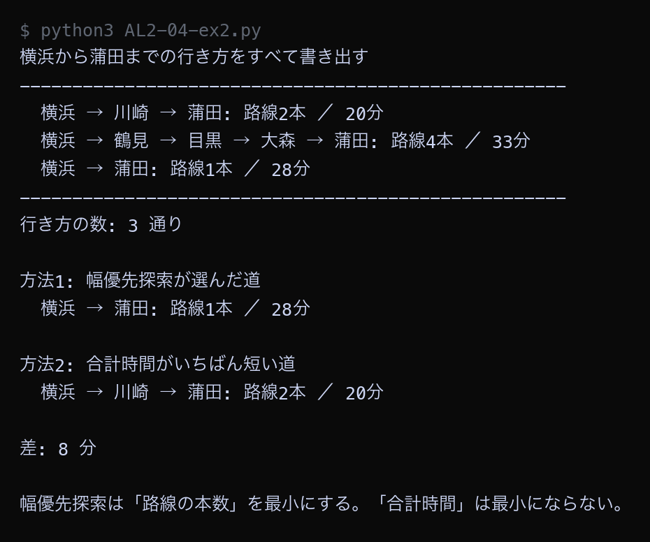

例題
例題1から例題4までのコードを実行してください。 例題4は実行に10秒ほどかかります。止まっているように見えても、終わるまで待ってください。
VS Code でフォルダとファイルを用意する
Step 1: 作業フォルダを作る
- デスクトップに AL2 という名前のフォルダを作る（後期の授業ではずっと同じフォルダを使う）
- AL2 フォルダの中に No04 という名前のフォルダを作る
└── AL2/
├── No03/ ← 前回のファイル
└── No04/ ← 第4回はここに保存
Step 2: VS Code でフォルダを開く
- Visual Studio Code を起動する
- メニューから 「ファイル」→「フォルダーを開く」を選ぶ
- Step 1 で作った AL2/No04 フォルダを選んで開く
左側のエクスプローラーに No04 フォルダの中身が表示される（最初は空）。
Step 3: 例題ごとにファイルを作って実行する
- 左側エクスプローラーの No04 の横にある 新しいファイルアイコンをクリック
- ファイル名を入力して Enter（例題1なら
AL2-04-ex1.py） - 例題のコードブロック右上の コピーボタンをクリック
- VS Code の編集画面に 貼り付ける（Ctrl+V / Cmd+V）
- 保存する（Ctrl+S / Cmd+S）
- 右上の ▷（再生ボタン）をクリックして実行する
今回作るファイル: AL2-04-ex1.py, AL2-04-ex2.py, AL2-04-ex3.py, AL2-04-ex4.py
今回のキーワード
| 用語（読み方） | 説明 |
|---|---|
| 重み おもみ / weight | 辺ごとに書き込む数値。乗車時間・距離・料金など「その辺を通るのにかかるもの」を表す。 |
| 重み付きグラフ weighted graph | すべての辺に重みが付いているグラフ。重みのないグラフは、すべての重みが1のグラフと考えることもできる。 |
| コスト cost | 重みの言いかえ。「その道を通るために支払うもの」という意味で使う。合計コストが小さいほど良い。 |
| タプル tuple | ("渋谷", 7) のように、丸かっこでいくつかの値をまとめたもの。リストと違って、あとから中身を書き換えられない。 |
| 全探索 ぜんたんさく / brute force | 考えられる候補をすべて書き出して1つずつ調べる方法。必ず正しい答えが出るが、候補が増えると終わらなくなる。 |
重み付きグラフを隣接リストで表す
6つの駅からなる路線図に、区間ごとの乗車時間を重みとして書き込みます。
重み付きの隣接リストでは、となりの駅を ("駅の名前", 時間) という2つ組で並べます。
Python ── AL2-04-ex1.py # 重み付きグラフを隣接リストで表す # 重み（おもみ）= 辺ごとに付いている数値。ここでは「乗車時間（分）」を重みにする。 # となりの駅を (駅名, かかる時間) の形で並べる railway = { "新宿": [("渋谷", 7), ("池袋", 9), ("品川", 30)], "渋谷": [("新宿", 7), ("品川", 9)], "池袋": [("新宿", 9), ("上野", 12)], "上野": [("池袋", 12), ("東京", 6)], "東京": [("上野", 6), ("品川", 11)], "品川": [("新宿", 30), ("渋谷", 9), ("東京", 11)], } print("重み付きグラフ（数字は乗車時間・分）") print("-" * 46) for station in railway: parts = [] for name, minutes in railway[station]: parts.append(f"{name}({minutes}分)") print(f"{station}: " + "、".join(parts)) print("-" * 46) print() def route_minutes(route): """駅を順に通ったときの合計時間を求める。つながっていない駅があれば None を返す。""" total = 0 for i in range(len(route) - 1): here = route[i] next_station = route[i + 1] found = False for name, minutes in railway[here]: if name == next_station: total = total + minutes found = True break if not found: return None return total # 新宿から品川まで、3通りの行き方を比べる routes = [ ["新宿", "品川"], ["新宿", "渋谷", "品川"], ["新宿", "池袋", "上野", "東京", "品川"], ] print("新宿から品川までの行き方を比べる") print("-" * 46) for route in routes: minutes = route_minutes(route) print(f"{' → '.join(route)}") print(f" 乗りかえの回数: {len(route)-2}回 ／ 合計時間: {minutes}分") print("-" * 46) print() print("直通（乗りかえ0回）がいちばん時間がかかっている")
▶ 実行結果
![AL2-04-ex1.py の実行結果。重み付きグラフ（数字は乗車時間・分） / ---------------------------------------------- / 新宿: 渋谷(7分)、池袋(9分)、品川(30分) / 渋谷: 新宿(7分)、品川(9分) / 池袋: 新宿(9分)、上野(12分) / 上野: 池袋(12分)、東京(6分) / 東京: 上野(6分)、品川(11分) / 品川: 新宿(30分)、渋谷(9分)、東京(11分) / ---------------------------------------------- / / 新宿から品川までの行き方を比べる / ---------------------------------------------- / 新宿 → 品川 / 乗りかえの回数: 0回 ／ 合計時間: 30分 / 新宿 → 渋谷 → 品川 / 乗りかえの回数: 1回 ／ 合計時間: 16分 / 新宿 → 池袋 → 上野 → 東京 → 品川 / 乗りかえの回数: 3回 ／ 合計時間: 38分 / ---------------------------------------------- / / 直通（乗りかえ0回）がいちばん時間がかかっている](images/a04_ex1_result.png)
新宿から品川へは3通りの行き方があり、乗りかえ0回の直通が30分、渋谷で1回乗りかえる行き方が16分、大回りの行き方が38分でした。乗りかえが少ない順に並べると 30分 → 16分 → 38分 で、乗りかえの回数と所要時間はまったく対応していません。route_minutes 関数は、隣り合う2駅の重みを順に足していくことで合計時間を求めています。
幅優先探索では最短時間を求められない
幅優先探索で新宿から品川への経路を求め、すべての行き方の中でいちばん時間が短い経路と比べます。
Python ── AL2-04-ex2.py # 幅優先探索は「重みの合計」を最小にできないことを確かめる from collections import deque railway = { "新宿": [("渋谷", 7), ("池袋", 9), ("品川", 30)], "渋谷": [("新宿", 7), ("品川", 9)], "池袋": [("新宿", 9), ("上野", 12)], "上野": [("池袋", 12), ("東京", 6)], "東京": [("上野", 6), ("品川", 11)], "品川": [("新宿", 30), ("渋谷", 9), ("東京", 11)], } start = "新宿" goal = "品川" def route_minutes(route): """駅を順に通ったときの合計時間を求める""" total = 0 for i in range(len(route) - 1): for name, minutes in railway[route[i]]: if name == route[i + 1]: total = total + minutes break return total # --- 方法1: 幅優先探索（乗る路線の本数がいちばん少ない道をさがす） --- came_from = {start: None} queue = deque([start]) while len(queue) > 0: current = queue.popleft() if current == goal: break for name, minutes in railway[current]: if name in came_from: continue came_from[name] = current queue.append(name) bfs_route = [] node = goal while node is not None: bfs_route.append(node) node = came_from[node] bfs_route.reverse() # --- 方法2: すべての行き方を書き出して、合計時間がいちばん短い道をさがす --- def all_routes(here, goal, visited): """here から goal までの、同じ駅を2度通らない行き方をすべて返す""" if here == goal: return [[goal]] result = [] for name, minutes in railway[here]: if name in visited: continue for rest in all_routes(name, goal, visited + [name]): result.append([here] + rest) return result every_route = all_routes(start, goal, [start]) print("新宿から品川までの行き方をすべて書き出す") print("-" * 52) for route in every_route: print(f" {' → '.join(route)}: 路線{len(route)-1}本 ／ {route_minutes(route)}分") print("-" * 52) print("行き方の数:", len(every_route), "通り") print() best_route = every_route[0] for route in every_route: if route_minutes(route) < route_minutes(best_route): best_route = route print("方法1: 幅優先探索が選んだ道") print(f" {' → '.join(bfs_route)}: 路線{len(bfs_route)-1}本 ／ {route_minutes(bfs_route)}分") print() print("方法2: 合計時間がいちばん短い道") print(f" {' → '.join(best_route)}: 路線{len(best_route)-1}本 ／ {route_minutes(best_route)}分") print() print("差:", route_minutes(bfs_route) - route_minutes(best_route), "分") print() print("幅優先探索は「路線の本数」を最小にする。「合計時間」は最小にならない。")
▶ 実行結果

幅優先探索が選んだのは直通の30分の経路でした。一方、合計時間がいちばん短いのは渋谷で乗りかえる16分の経路で、その差は14分もあります。幅優先探索は「路線の本数」を最小にするアルゴリズムなので、本数が1本の直通を選びます。重みの合計を最小にしたい場合、幅優先探索は使えません。
床にコストがある迷路
迷路のマスごとに「通り抜けるのにかかる秒数」を決めた迷路を作り、3通りの行き方の合計時間を比べます。 1 は舗装された道（1秒）、9 はぬかるみ（9秒）です。
Python ── AL2-04-ex3.py # 床にコストがある迷路 # マスごとに「通り抜けるのにかかる時間」が決まっている迷路を考える。 # 1 = 舗装された道（1秒） # 9 = ぬかるみ（9秒） cost_map = [ [1, 1, 1, 9, 1], [9, 9, 1, 9, 1], [1, 1, 1, 9, 1], [1, 9, 9, 9, 1], [1, 1, 1, 1, 1], ] rows = len(cost_map) cols = len(cost_map[0]) print("床コスト付き迷路（数字はそのマスを通るのにかかる秒数）") print(" S = スタート(0,0) G = ゴール(4,4)") print("-" * 30) for r in range(rows): line = " " for c in range(cols): mark = " " if (r, c) == (0, 0): mark = "S" if (r, c) == (rows - 1, cols - 1): mark = "G" line = line + f"{cost_map[r][c]:>4}{mark}" print(line) print("-" * 30) print() def route_cost(route): """通る順番が route のとき、合計で何秒かかるかを求める。 スタートのマスは「入る」わけではないので数えない。""" total = 0 for i in range(1, len(route)): r, c = route[i] total = total + cost_map[r][c] return total def draw(route, title): """通り道のマスに * を付けて迷路を表示する""" picture = [] for r in range(rows): line = [] for c in range(cols): if (r, c) in route: line.append(f"{cost_map[r][c]:>4}*") else: line.append(f"{cost_map[r][c]:>4} ") picture.append("".join(line)) print(title) for line in picture: print(" " + line) print() # 3通りの行き方を比べる（* が通り道） route_a = [(0, 0), (1, 0), (2, 0), (3, 0), (4, 0), (4, 1), (4, 2), (4, 3), (4, 4)] route_b = [(0, 0), (0, 1), (0, 2), (0, 3), (0, 4), (1, 4), (2, 4), (3, 4), (4, 4)] route_c = [(0, 0), (0, 1), (0, 2), (1, 2), (2, 2), (2, 1), (2, 0), (3, 0), (4, 0), (4, 1), (4, 2), (4, 3), (4, 4)] print("行き方A: 左の列を下りて、下の行を右へ進む") draw(route_a, f" 歩数 {len(route_a)-1}歩 ／ 合計 {route_cost(route_a)}秒") print("行き方B: 上の行を右へ進んで、右の列を下りる") draw(route_b, f" 歩数 {len(route_b)-1}歩 ／ 合計 {route_cost(route_b)}秒") print("行き方C: いったん右へ出てから左へもどり、下の行を右へ進む") draw(route_c, f" 歩数 {len(route_c)-1}歩 ／ 合計 {route_cost(route_c)}秒") print("-" * 44) print(f"行き方A: {len(route_a)-1}歩 ／ {route_cost(route_a)}秒") print(f"行き方B: {len(route_b)-1}歩 ／ {route_cost(route_b)}秒") print(f"行き方C: {len(route_c)-1}歩 ／ {route_cost(route_c)}秒") print("-" * 44) print("歩数がいちばん多い行き方Cが、合計時間ではいちばん短い")
▶ 実行結果
![AL2-04-ex3.py の実行結果。床コスト付き迷路（数字はそのマスを通るのにかかる秒数） / S = スタート(0,0) G = ゴール(4,4) / ------------------------------ / 1S 1 1 9 1 / 9 9 1 9 1 / 1 1 1 9 1 / 1 9 9 9 1 / 1 1 1 1 1G / ------------------------------ / / 行き方A: 左の列を下りて、下の行を右へ進む / 歩数 8歩 ／ 合計 16秒 / 1* 1 1 9 1 / 9* 9 1 9 1 / 1* 1 1 9 1 / 1* 9 9 9 1 / 1* 1* 1* 1* 1* / / 行き方B: 上の行を右へ進んで、右の列を下りる / 歩数 8歩 ／ 合計 16秒 / 1* 1* 1* 9* 1* / 9 9 1 9 1* / 1 1 1 9 1* / 1 9 9 9 1* / 1 1 1 1 1* / / 行き方C: いったん右へ出てから左へもどり、下の行を右へ進む / 歩数 12歩 ／ 合計 12秒 / 1* 1* 1* 9 1 / 9 9 1* 9 1 / 1* 1* 1* 9 1 / 1* 9 9 9 1 / 1* 1* 1* 1* 1* / / -------------------------------------------- / 行き方A: 8歩 ／ 16秒 / 行き方B: 8歩 ／ 16秒 / 行き方C: 12歩 ／ 12秒 / -------------------------------------------- / 歩数がいちばん多い行き方Cが、合計時間ではいちばん短い](images/a04_ex3_result.png)
行き方Aと行き方Bはどちらも8歩・16秒、行き方Cは12歩・12秒でした。歩数がいちばん多い行き方Cが、合計時間ではいちばん短くなっています。行き方Aと行き方Bは、途中で 9 のマス（ぬかるみ）を1回通っているためです。ぬかるみを1マス通るだけで9秒かかるので、舗装路を4マスよけいに歩いたほうが早く着きます。
全探索が使えなくなる大きさ
「すべての行き方を書き出して、いちばん安いものを選ぶ」という全探索が、 迷路の大きさによってどれくらい時間がかかるようになるかを測ります。
Python ── AL2-04-ex4.py # すべての行き方を書き出して最小コストを求める方法（全探索）は、 # 迷路が少し大きくなるだけで使えなくなることを確かめる import time def count_all_routes(size): """size × size の迷路で、同じマスを2度通らない行き方をすべて数え、 いちばん安い合計コストも求める。すべてのマスのコストは1とする。""" goal = (size - 1, size - 1) visited = set() result = {"count": 0, "best": None} def walk(r, c, total): """ここから先の行き方を、同じ場所を2度通らないようにすべてたどる""" if (r, c) == goal: result["count"] = result["count"] + 1 if result["best"] is None or total < result["best"]: result["best"] = total return for dr, dc in [(-1, 0), (1, 0), (0, -1), (0, 1)]: nr = r + dr nc = c + dc if nr < 0 or nr >= size or nc < 0 or nc >= size: continue if (nr, nc) in visited: continue visited.add((nr, nc)) walk(nr, nc, total + 1) visited.discard((nr, nc)) # 調べ終わったら「通っていない」状態に戻す visited.add((0, 0)) walk(0, 0, 0) return result["count"], result["best"] print("全探索で「すべての行き方」を数えたときの通り数と時間") print("-" * 56) print("迷路の大きさ 行き方の数 かかった時間") for size in [3, 4, 5, 6]: started = time.time() count, best = count_all_routes(size) elapsed = time.time() - started print(f"{size}マス×{size}マス {count:>16,}通り {elapsed:>10.3f}秒") print("-" * 56) print() print("7マス×7マスの行き方は 575,780,564 通りある。") print("6マス×6マスのおよそ456倍なので、同じパソコンでは1時間近くかかる計算になる。") print("迷路が1マス大きくなるだけで、全探索は現実的な時間で終わらなくなる。")
▶ 実行結果

3マス四方は12通り、4マス四方は184通り、5マス四方は8,512通り、6マス四方は1,262,816通りでした。たった1マス大きくなるだけで、行き方の数はおよそ150倍に増えています。6マス四方で約7秒かかったので、7マス四方（5億7千万通り）では1時間近くかかる計算になります。カーナビが数万の交差点をあつかうことを考えると、全探索はまったく使えません。